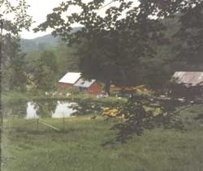
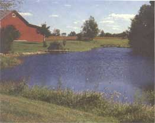
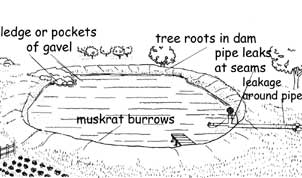
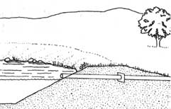
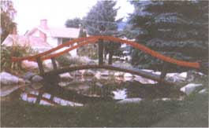
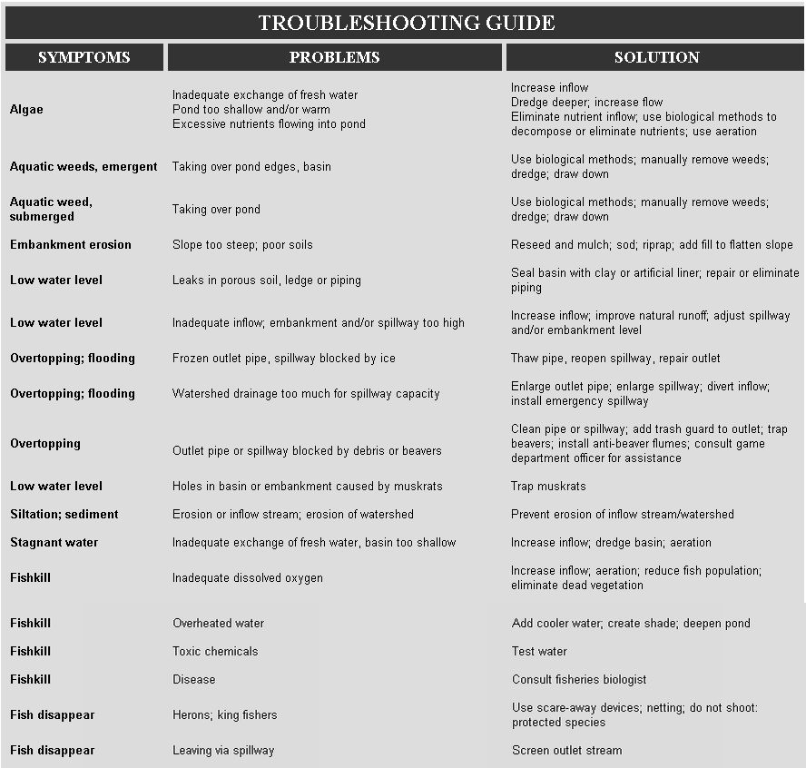
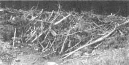
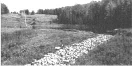

Maintaining Your Pond
Keeping the home watering hole healthy, including repairs, inflows, outlets, troubleshooting guide.
By Tim Matson
April/May 1992
Earth-pond guru Tim Matson Explains all the ins, outs, highs, lows, and - well -basins
by Tim Matson
"Ponds need no such labor and charges as other commodities do." That was how the elder Pliny saw the need of pond maintenance 19 centuries ago, and it's a view that still looks good, especially to stewards of land-based, labor-intensive farming schemes. To many of them, pond culture has all the lure of a forever-standing GONE FISHIN' sign. Yet anyone who's tended a pond knows the periodic chores: erosion and weed control, spillway repair, cleanup, and, most vexing, plugging leaks. The pondkeeper who neglects them imperils fish, water, pond, and the neighbors downstream. If, indeed, pond culture requires less labor than most country endeavors, the reason has more to do with the pondkeeper than with the pond itself - for the cunning pondkeeper works with the seasons, synchronizing chores with the life cycle of the pond and tapping the forces of nature for support.
Pond Repairs
All ponds are divided into three parts: the inflow, the basin, and the outflow. The inflow may be a spring, stream, pipe, watershed runoff, groundwater, or a combination. The basin consists of the pond bowl, adjacent shoreland, and - in the case of an embankment pond - the dam. The outflow may be a natural spillway, a piping system, sluice gate, or a combination of these. In some cases, a dug pond will not have a visible inflow or outlet, but unless it's stagnant, ground water is flowing through. "Sky ponds" and other reservoirs that depend on precipitation have no ground-water inflow.
Inflow brings the water, the basin holds it, and the outflow releases it. When a pond is in good shape, the three elements work together. Elementary stuff to be sure, until something goes wrong.
Inflows
Most ponds depend on a combination of several water sources. When operating properly, a pond will have good water volume and adequate exchange, or overflow, to ensure against stagnation. When the inflow goes awry, a pond will have either too much water or too little, and perhaps siltation due to erosion. The most common problem with inflow is lack of sufficient water to sustain pond level and ensure a healthy exchange. The problem might be simply drought. Or perhaps the pond was built with the option of eventually developing a supplementary water source, if needed. Or it's simply sited incorrectly.
New ponds often take a year or two to seal naturally, so it may be premature to search for leaks until the pond has had a chance to settle. Moreover, it may be difficult to decide if low water is due to inadequate inflow or a leak. Since it's easier to add water than repair a leaky basin, solutions for low water usually begin with an examination of supplementary water potential. Even if the pond does leak, a fresh source of water may compensate for the loss.
Before developing new water sources, it's important to determine if existing inflows are clogged or cut off. Spring flows and small streams often become overgrown with vegetation or clogged with silt. A previously reliable source of water may back up and soak the ground above the pond before reaching the basin. I worked on one pond where a pipe carrying spring flow to the shoreline had been crushed and sealed shut by an excavator during a cleanup job. It was just enough of a loss to slow down the exchange to a point where algae bloomed and covered the pond. A cleanout won't be especially helpful for a pond that's short of water.
Because of the potential for erosion, cleaning out feeder streams or bringing in supplementary inflows directly may bring in silt. It's important to do stream work during dry weather, and to stabilize the channel upon completion. If a stream is prone to erosion, it often makes better sense to contain the water in a pipe. Piping prevents erosion and enables the owner to control the flow, which can be helpful during repairs. Adding a cutoff valve, along with an alternative channel for the water that allows the inflow to be diverted around the pond, makes it possible to keep the pond dry during maintenance work. Piping also prevents water loss due to seepage. If animals are pastured on inflow areas, it may be necessary to pipe water in to prevent damage for trampling.
Piping a stream into a pond can be tricky. It's necessary to create a pool that will feed the bypass pipe, and yet not readily fill with silt. Often, a dam is constructed upstream of the pool, keeping it relatively silt-free. Usually the pipe is covered with stone or encased in a perforated concrete or steel box to filter out debris and silt.
Flexible plastic pipe is often used to bring in extra water and can be buried or left above ground, depending on winter use. Normally an above-ground pipe should be drained in winter if there is any chance of freezing. A pipe buried below frost line will run in cold weather, as long as the pickup source doesn't dry up or freeze. If the pond is used in winter (for fish culture or skating, for instance), the water line will have to be frost-proofed or the water level may drop due to icing in the pipe. It's important to bury the pipe with as few dips and rises as possible to ensure against air locks or silt clogging the line. A vent in the pipe sometimes helps prevent air locks. A pipe that flows downhill with no obstructions will be easy to drain, which is helpful in winter. Burying the line also keeps the water cooler in summer. This may or may not be helpful, depending upon the temperature you or your fish like to swim in.
Flexible corrugated construction pipe - sometimes called "elephant trunk" - is becoming popular in pond systems. Four-inch elephant trunk delivers a large volume of water and is easily maneuvered. It can be used in temporary setups quite effectively to bring cold stream or well water to a trout pond in summer, and during pond construction to prevent water flowing into the pond from eroding the exposed soil. I've also seen it used as a pond siphon hose that doubled as a suction pipe to remove silt.
If piping seems unnecessary or too expensive, channeling supplementary water directly into the pond may be most practical. Dry weather is best for digging, and upon completion it's important to stabilize the channel with rock riprap and/or vegetative reinforcement. Often a small silt basin is dug just upstream of the pond to catch silt before it reaches the pond. This pocket can be cleaned out as needed, by hand or machine, without disturbing the pond.
If no supplementary stream or well is available, pond owners sometimes cut drainage ditches in the watershed above the pond. The ditches are usually filled with stone over perforated plastic pipe. As a last-ditch resort, an artesian well may be drilled for extra water, although hitting a rich vein is never certain. If leakage is suspected, balance the estimated cost of bringing in water against that of attempting to improve the pond's water-retaining ability.
Erosion of the feeder stream, and consequent siltation of the pond, is a common inflow problem. It's not unusual for ponds to require cleanouts near the inflow every five or 10 years. Poorly designed ponds, particularly if excavated during wet weather, can fill up with silt during their first year where the soil is unstable. Thus it's best to wait for dry weather for digging, and perhaps divert channel inflows away from the pond or through the basin via pipe during construction. When work is complete, the water can be returned to the pond after inflow channels are stabilized with riprap or piping. Riprap is effective where silt slows down stream flow. Such incoming water channels should be cleaned out and lined with stone to facilitate the flow, reduce erosion, and discourage algae.
In addition to using piping and silt basins, inflows can be stabilized by filtration. Hay bales are sometimes used in stream channels to retard the movement of silt. Establishing a vegetative strip may also help, whether it be native grasses or sod.
Rock riprap is one of the most common solutions to inflow erosion. Don't use large stones that leave wide gaps between them. In areas where the soil is especially silty and unstable, it may be helpful to lay down a bed of gravel before applying the riprap.
Ponds can also suffer from an inflow of too much water. A good example is the story of Runaway Pond in Glover, Vermont. In 1810, the operator of a grist mill in Glover decided that he needed a more reliable source of power for his water wheel, so he had a ditch dug from his existing pond up to another reservoir at a higher elevation. The idea was to channel the new pond into the original, but when the channel was complete and the water rushed down, the stream inundated the mill pond. The pond overtopped, the embankment blew, the mill was destroyed, and so was half the town. Moral: Don't add more water than your pond can handle. The miller's mistake was in not building a control gate on the higher pond so that he could regulate the inflow.
Excavated ponds that lie in wet lowlands may be damaged by flood waters. Fortunately, most excavated ponds, even if flooded, pose little threat downstream. Damage from flooding may involve siltation or contamination from upstream pollution, and loss of fish. It's possible to build a protective berm upstream as a barrier against flooding. The berm's effectiveness will depend on the height of the berm and the level of flooding. Material excavated during construction can be used to build the berm. A more natural look can be achieved by using earth excavated for the pond. This builds up a complete surrounding shore area a foot or two higher than the existing terrain. Like an island, the pond-shore complex sits above ground level, well-protected against flooding. Utilizing excavated material close to the pond, rather than trucking it away, may also save on construction costs.
Outlets
A well-designed outlet can
mean years of trouble-free
operation. It has to be
sturdy enough to funnel pond
overflow year-round, and
withstand the upheavals of
winter frost and ice.
A well-designed outlet can mean years of trouble-free pond operation. Whether it's a natural-earth spillway, a sluice gate, or a pipe, the outlet must be sturdy enough to funnel pond overflow year-round, and withstand the upheavals of winter frost and ice. Natural spillways are favored by pond designers who want to eliminate pipe costs and risks of leakage. The natural look of a pond overflow stream and its potential for landscaping also appeals to many pond owners. Excavated ponds often feature natural spill because of the impracticality and expense of installing lengthy drain pipes in valley terrain. On the other hand, a pipe outlet may seem attractive to some pond owners who wish to: create a seamless shore; prevent erosion; or have the ability to quickly drain the pond, vary the water level, or divert the overflow for irrigation, hydropower, or aquaculture.
The simplest pond outlet is a natural-earth spillway. It may be prone to erosion, but usually this is overcome with stone, ledge, or other reinforcing material. Particularly in new ponds, earth spillways can erode dramatically if they are not adequately lined. Field or brook stone, or rock riprap, is generally used. Often a natural spillway will utilize a large rock or ledge at the crest of the spillway to prevent erosion. On-site ledge may be incorporated into a design to function as the spillway. I've seen spillways covered with a protective layer of concrete, but the concrete is often undermined by runoff and ice.
It's not unusual for a new pond to require an extra load of stone to reinforce a natural spillway after the pond overflows the first season. Ponds with especially steep overflows will be most susceptible to erosion. A spillway that descends in a curve will not wash out as readily as one with a straight drop. Sod can be used to help stabilize the spillway banks. Once vegetation is reestablished and the channel stabilizes, a natural spillway may need little attention. One pond owner commented to me that she liked a natural spillway because she could see what was happening. Because of leakage, she had replaced the original horizontal drain pipe with a natural spillway. She added flat stones in steps to create a waterfall effect.
Make sure that leaves and other debris don't clog the channel, especially if wire mesh is used to keep in fish. Such fencing can plug up. Sometimes a spillway will draw floating leaves and debris to the outlet, where it can be skimmed or raked out. This is especially true if the spillway is sited leeward of prevailing winds.
If a spillway does need repairs or additional stone, be sure not to raise the water level of the pond to a point where it might inadvertently flood the dam. In some cases, a small amount of erosion might be tolerable in one pond but not another. I've seen farms where fencing that crossed the spillway became ineffective because of erosion. In a case like that, it may be necessary to pipe out the overflow. Frequent traffic across a spillway might also destabilize the channel and require a pipe outlet.
Ponds are usually piped through either a horizontal or slightly tilted overflow, or through what's called a trickle tube (also known as a drop inlet). A horizontal pipe is relatively simple to install just a foot or so below shore level, with a slight downward tilt. The trickle tube is a vertical drain open at the water level and coupled by an elbow to an outlet pipe near the bottom of the pond basin. Pipes are often used in embankment ponds because they offer no-erosion overflow as well as the option of attaching a drain for repairs, clean-outs, and fish harvest.
Unless carefully installed, overflow pipe is vulnerable to an assortment of maladies. Because they often lie above frost level, horizontal water level overflows are especially subject to ice damage in winter. If the ground freezes and shifts the pipe, it's easy for overflow to sneak underneath.
During spring, the ground beneath the pipe erodes and can drain the pond, damaging the embankment in the process. Chances for this kind of blowout are greatly reduced if one or more anti-seep collars are fitted around the pipe prior to installation. The collars may be plastic, steel, or concrete. Tar is used to seal the seam. Plastic pipe is becoming popular with pond builders because of low cost and ease of handling and installation. It's light, no welding is required, and it won't rust.
Because water moves with less resistance through smooth plastic pipe than through corrugated steel, smaller diameter pipes can be used. Some pond builders are skeptical about the longevity of plastic pipe and its susceptibility to ice damage. Thus double-riveted, asphalt-coated culvert pipe is often specified by state or federal engineers, especially for larger ponds. It's important that culvert pipe be carefully coupled together using asphalt caulking, and then banded tight and welded.
A leak or modest amount of erosion around a horizontal pipe should not be difficult to fix. One resourceful pond owner told me about a shortcut remedy he devised for a water-level horizontal outlet that was leaking around the outside. He tamped down the earth above the pipe with a heavy log, and the leak stopped.
However, tearing up a trickle tube and drain deeply embedded in a dam is another matter. Such repairs can be expensive and don't always work. Tearing apart the dam may lead to subsequent leakage unrelated to the pipe, because it's difficult to restore the integrity of the dam core. It's not unusual for pond owners with leaky or eroded piping to remove the pipe completely, refill the dam with earth, and then channel the overflow down a natural spillway. I once saw a leaky trickle tube filled with concrete to solve matters; an alternate natural spillway replaced it.
George Williams, a pond builder in Cavendish, Vermont, recalls an outlet that had to be dug up and repaired twice, and it continued to leak. He finally discovered small holes drilled into the pipe. The holes had been used for wires to help secure the pipe during transportation. He repaired the holes and the outlet worked.
Ice can do more than displace a horizontal outlet. When a trickle tube is installed so that the top several feet of pipe stand in open water, the pipe is vulnerable to damage from ice movement. I've heard of ice actually lifting a plastic trickle tube right out of the outlet elbow so that the pond emptied. Trickle tubes also can be pushed around by ice so they crack and leak. It makes sense to install the trickle tube close to shore, so that only a foot or two isn't packed in earth.
Installing the pipe in solidly compacted, water-retaining soil is essential. One of the worst pond blowouts I've seen occurred in a pond that had been designed with "sand doughnuts" to serve as anti-seep collars. The drain pipe had been installed with several rings of sand around the pipe, intended to prevent seepage. Water found its way through the sand, and during spring runoff the dam tore open. By the time the pond emptied, a half-mile of town road had been destroyed. Repair fees and legal expenses exceeded the original construction costs.
In addition to making sure any pond overflow system near a public road is floodproof, it's important not to locate outlets too close to roadways. Water-saturated roadbeds are easily damaged by traffic and, because they're plowed in winter, may freeze and lead to icing in nearby pipes.
In cold climates, an outlet pipe exposed to the air for any great length at the downstream end may act like an ice tray, freezing and blocking overflow. The outlet should be cut off close to the earth it's installed in, making sure that the surrounding area is reinforced to prevent erosion.
Outlet pipes can become plugged with leaves and other pond debris. Flat mesh screens and trash racks are sometimes used to keep pipes from plugging. It's important to make sure the mesh isn't so small that debris builds up and stops the outflow. If the pond owner occasionally cleans the outlet trash rack, or screen, the chances for plugging are reduced. Outlet cleaning is another good reason to site the pipe close to shore.
Outlet pipes can be plugged by animals. Beavers may block up outlet piping in an effort to raise the pond water level. It might not take long to clear the outlet at first, but beavers are persistent critters, and the pond owner may find himself in a daily struggle to prevent flooding. There are several ways to deal with beavers: They can be trapped or shot, depending on local laws and the sympathy level of the landowner. Dynamite is sometimes used to blow out beaver dams that jeopardize a pond or pose a threat downstream. Dynamite can also be used in the lodge to kill beavers, and to prevent another family from taking up residency.
But these are drastic measures, in many states against the law, and certainly not in tune with most pond owners I know. Thus, beaver inhibitors have been designed for pond outlets. The simplest is a mesh screen to prevent the animal from inserting brush or mud into the pipe. However, it's not unusual for a beaver to pack enough debris against the outlet screen to plug it, and more complicated solutions are required. One pond builder I know recommends building a dock over the outlet pipe and then wrapping the structure in wire mesh, right down to the bottom of the pilings (similar to a large trash rack). Vertical baffles on the outlet can also hinder beavers. Preventing beavers from damming a natural spillway may require more than physical removal of brush.
Rust is another problem that may occur with metal piping. Leaks in piping usually lead to a drop in the water level, and replacement of the piping is necessary. Small leaks may not affect the water level, but it's not unusual for the area around the outlet pipe to become muddy because of this seepage. Depending on the severity of the problem, repairs may be necessary.
Beavers are persistent critters,
and the pond owner may find
himself in a daily struggle to
prevent flooding.
Some pond owners like to see a rather high water level, which may not be possible with a horizontal outlet pipe designed to carry substantial storm water. For instance, a 12-inch diameter pipe set under 12 inches of earth means that water will begin overflowing 24 inches below shore level. Some pond designers install two or three smaller pipes, which together can accommodate the overflow but needn't be set so deep.
Outlet pipes and drains may be fitted with valves to control overflow. These can be quite costly and require expensive installation. Simple open/shut gates can be fitted to drains to cut costs. Bear in mind that for every plumbing feature added to a pond, also added is the potential for a leak.
Sluice gates offer some water-level control, and, in certain cases, a drain option. The sluiceway usually consists of wood or concrete abutments at the sides of the outflow channel, with a wood or steel gate that can be adjusted to raise or lower the water level. Sometimes planks are inserted or removed to change the water level. Relatively inexpensive wood sluiceways can be installed in small ponds, but design and construction costs for larger concrete structures may be high. Sluiceway damage usually involves erosion around the abutments or wing dikes, or under the foundation below the gate. Sluiceway repairs usually involve emptying the pond and rebuilding the abutments. Replacing the gate with a pipe outlet is often the most economical solution.
The Basin
The heart of the pond structure is the basin. It has to absorb ground water, receive rain water and surface level inflows, and hold both its shape and water. Keeping a healthy water level is the pond owner's greatest challenge. Of all the ills that afflict ponds-algae, aquatic weeds, siltation, eutrophication, and other maladies - leaks are the most common. Since none of us can see underground, leaks are the most difficult pond problem to identify and remedy. They can develop from many different construction flaws or site conditions.
Keep in mind that all natural earth ponds leak-seep is a better word. Unless a pond is static, water is constantly flowing in and out of the basin. The idea is to keep the seepage to a minimum, so that the desired water level and healthy exchange of fresh water can be maintained.
How do you know when a pond is leaking? It's not unusual for pond water levels to drop a foot, maybe more, naturally, during hot, dry weather. Some don't. It all depends on the local water conditions, pond soil and construction, and weather. New ponds sometimes take time to seal after construction, so it may be premature to think about repair work before observing the pond through its first summer or two. Ponds will sometimes fill up after construction, during wet weather, and then drop as the precipitation falls off. Each pond has a distinct personality, and after several years of observation, a pond owner can usually determine whether a pond-water-level drop is seasonal, weather-related, or more serious.
Graham R. Noble
MY ADVENTURES WITH
A GARDEN POND
Finding our front lawn very dull, we thought that a garden pond would be a good idea. Even though I had no idea how to make one, I impulsively decided to give building our own a try.
First, we went to our local sand and gravel merchant and ordered a huge truck full of rocks, most of them large boulders. With local delivery, we got the whole lot for $60. A neighbor with a backhoe agreed to dig out the pool for $75 and move the rocks around. The 12 x 6 yard hole in the front lawn was kind of a "figure eight" shape and about 30 inches deep.
All the dirt from the hole went in two mounds around the big rocks, leaving the rocks we could move ourselves at the edge of the pool. It was now time to make the pool waterproof. Ready-mix was way over our budget, since it would have to be 4 inches thick and full of re-bar if it was to stand our -30°F winters.
Looking at our driveway after rain, the large pools of water convinced us that Tarmac would be the answer, so we went ahead and had it Tarmaced. But it just didn't work, and all the water drained away. It was like trying to fill a sieve. After 2 or 3 tries, the Tarmac people gave us our money back - and said they would stick to driveways in the future.
So now we were stuck with a beautiful looking but empty black pool that wouldn't hold water. Then we heard about "Montana Mud," which was supposed to seal any leak. So we spread it over the Tarmac and filled the pool. Again it didn't work. We were starting to get depressed about the whole affair. when we had the brain wave of using a large tarp that had to be waterproof. We found a large blue one for $100, and covered it with a commercial landscape fabric held down by the rocks. That was six years ago, and it hasn't leaked yet.
With the surplus rock providing a lovely edge for the pool, we were ready for the bridge. We looked at a lot of different designs and finally chose an oriental look. By the time we finished-fish, lily pads. bridge, pool, and all-the cost was less than $600.
The pool gives us constant joy. It is never idle: birds bathe, dogs drink, cats fish, and neighborhood kids play endlessly-now there's always something happening when we look out.

Editor's Note: For those of you interested in building the pond bridge pictured here, detailed building plans can be ordered through MOTHER'S Bookshelf and Building Plans. The cost is $15 plus shipping handling.
Significant leakage is usually due to excessively porous soil. Sandy soil, gravel, shale, and ledge in the basin can cause leakage. Good pond soil usually contains 10 to 20% clay, sometimes more. It's not uncommon for a pond basin to include good clay soil and more porous material. Water leaks through the pervious soil, and that's where repairs should be made.
It's difficult, if not impossible, to repair a leak without draining the pond. However, determining the location of the leak may begin while the pond is holding water. Embankment ponds sometimes show evidence of leakage on the back side of the dam. Examining the outer bank may reveal especially wet areas or unusually tall grass or vegetation nourished by extra water. Another leak-locating technique is to dig a channel around the outside of the pond, at the base of the dam, with an additional ditch to keep the channel from filling with water. Examining the channel may reveal where water is leaking from the structure. Vegetable dyes are sometimes used in the pond water to help trace leakage. However, unless the dye reappears near the outside of the pond, the leak can't be pinpointed. Sometimes a "water witch" can dowse for leaks.
A little pond history helps leak detection. In the case of an embankment pond, find out if the dam was "keyed in." Good pond builders dig a core trench in the base of the dam and compact in a layer of impervious soil before building up the embankment.
Like a tongue-and-groove joint in carpentry, this key creates a solid bond between the base and the dam. It's also important that the base of the dam be stripped of vegetation before the embankment is built. If these two items were omitted, you have a pretty good idea where the trouble lies.
Ledge or a streak of sand may allow water to leak from the pond basin - straight down. There's no tracing that kind of leak with a channel or dye. The pond must be emptied, and even then you may have to guess exactly where the leak originates. Depending on pond design and terrain, the basin should be emptied by drain pipe, pump, or siphon hose. When the basin is empty, it may be possible to detect ledge or gravel patches that might be leaking. A foot or two of clay applied over the suspected flaw, harrowed in or packed with a roller, will often plug a leak. It's important not to dump the clay in a leaky pond, then refill it. The clay should be mixed with the basin soil and packed.
If good clay is available on site, it's the most economical solution. Otherwise clay is often trucked to the site. For those who live in areas where good clay is not readily available, bentonite is an alternative. Bentonite is a natural clay sealant that swells as much as 20 times its size when wet. It can be purchased in powder or granular form through aquacultural suppliers and well-drilling firms. Bentonite is generally applied "in the dry" at a rate of one pound per square foot. It is then mixed with the pond material with a light harrow and packed down. Simply dumping it from a rowboat into a leaky pond is not likely to remedy the problem.
Plastic or rubber liners are often used to seal leaky ponds. Liners are manufactured in various thicknesses, with optional ultraviolet-light resistance to retard decay caused by sunlight. Liners are popular in small water garden pools, golf-course hazards, and wastewater treatment lagoons. Because they cut off incoming ground water as well as leaks, liners are not usually used in ponds that depend on springs, unless only a portion of the pond is lined. When liners are used in spring-fed ponds, a drain may be required to prevent displacement of the plastic. Liners should be installed on smooth terrain, preferably sand, to prevent tearing. Another layer of sand is often used above the liner as further protection.
Aquaculturists at the New Alchemy Institute in East Falmouth, Massachusetts, report success with experiments using a traditional sealing method borrowed from Russia. They create a "gley" by cutting grass and other green vegetation, packing it six to eight inches thick in the pond basin, then trampling it by foot. The gley sits for two weeks and rots, but it doesn't decompose because it becomes anaerobic. The gley forms a gel. and after two weeks the pond is filled. A gley lining will hold water for a couple of years or more.
Sometimes concrete or ferroconcrete (concrete with wire reinforcement) is used to patch pond leaks. I've heard of wooden pilings being driven into an embankment to create an underground wall against leaking. I've also heard suggestions that both diatomaceous earth and ashes can be used to seal pond soil, but I've seen no proof.
Since water loss can occur because of defective piping, it's important to check basin drain outlets for signs of leakage. Be sure that water is not finding its way out around the outside of the pipe, as well as through it. Be sure also that drain valves are shut tight.
Leaks can occur because of muskrats or other burrowing animals digging in the embankment. Muskrats sometimes burrow in a pond basin, and their tunnels eventually leak water out of the pond. It may be necessary to trap the animals.
Tree roots incorporated in the dam or basin during construction may rot and open up leaks. It's important not to bury vegetation in the structure during construction. Tree roots growing in a pond dam can also cause leakage, which is why pond builders advise against planting trees on pond embankments.
Earth ponds, especially embankment ponds, are particularly vulnerable to internal and external erosion. Sloughing (sometimes called slumping) usually occurs inside a pond with overly steep slopes. The fill slides, and the pond loses its shape, perhaps leading to leakage or a weed problem.
Sources
For pond kits, aquatic plants, goldfish, and pond supplies:
Lilipons Water Gardens, P.O. Box 10, Dept 4692, Buckeystown, MD 217-17-0010; 800/999-5475
Rainbows End, 5652 Weatherend Dr., Cashmere, Wa 98815; 509/782-3301, 800/759-5475.
For weed removal:
Water-Weeder Harvester, Waterside Products Corp., P.O. Box 876Q, Lake Mahopac, NY 10541; 800/552-1217
Thus, while pond builders often disagree about things like spillway design, piping materials, or which are the best fish to stock, they usually agree about the slope angles inside and outside the pond. Inside, the slope should be no steeper than 2:1 in dug ponds (meaning two feet horizontally for each foot vertically), and closer to 3:1 in embankement ponds. Slopes closer to 4:1 are used in ponds where livestock or swimmers get into the water. Outside slopes which are no steeper than 2:1 discourage erosion, and flatter slopes make mowing and maintenance easier. Slope angles also depend on the stability of the fill, and especially silty, erodible material requires flatter slopes.
It's important not to make the inside slopes too flat, because they will foster weeds and algae. One solution for swimming areas is to carve out a beach and fill it with sand. The sand will serve as a mulch against weeds.
Ponds constructed on steep slopes may require shoring up in some areas. Where slopes are steeper than 2:1, stones are often used to build retaining walls to keep the basin from slumping. Besides adhering to these slope angles, careful pond builders often let fill material drain before building an embankement. By letting the water drain out of the material excavated for embankement construction, the fill is easier to work with and will not settle as much after construction. Also, pond builders often allow the finished basin to sit for several weeks before filling it with water. Warm sunlight on a newly constructed pond has the effect of baking the structure and sealing it, much like pottery in a ceramic oven.
THE POND IN SPRING
The main objective in the spring is to be a good midwife at the rebirth of the pond after its long, dark winter. The pond wants to take in big gulps of fresh, richly aerated water, and flush out last year's crud. You should help, but beware: the pond must be simultaneously shielded against two threats that arrive with spring waters - erosion and silt.
The erosive, silting power of spring flood water is formidable. A stream that doubles its speed also quadruples its load-carrying capacity. The more silt it carries, the greater its ability to erode - a vicious hydrologic cycle.
Moreover, at the same time that thawing snow and falling rain are adding to spring floodwaters, the shoreland heaves as frost works its way off the ground. Spillways, ditches, and berms are undermined. Piping cracks and trash racks clog. In a few weeks of spring, the pond is likely to suffer more damage than all the rest of the year.
As usual, good siting and construction make the best defense against reservoir wear and tear. In spring, the wise pondkeeper will congratulate himself for steering clear of the big stream inflows; even a small intermittent vein can deliver an avalanche of silt.
Throughout spring, water channels leading into and out of the pond should be cleaned and reinforced. Debris in the vein feeding the pond will decay, eating up oxygen and tipping up water temperatures; debris in the spillway will back up overflowing water, causing erosion around the spillway-approach channel and shore, not to mention increasing the chance for flooding. Spring is also the time to check for ice damage to piping.
Mind the watershed above the pond, especially cultivated farmland or terrain doused with manure, chemicals, or garbage. Open upstream land will feed detritus into ponds. Diversion ditches and berms around the upstream hemisphere of the pond help detour silt, but don't dig them in spring! Refrain, too, early in the year, from logging, roadwork, or construction in the near upstream watershed.
Pipes that feed stream water to bypass ponds often clog in spring. A "digger dam" in the stream just above the intake pool will usually sweep silt around the pipe, and in conjunction with a screen and/or trash rack, will keep the inflow clear. For clearest passage through rough spring water, some pondkeepers find it simplest to close off side pipes at the source.
In the book Aquaculture, authors Bardach, Ryther, and McClarney recommend keeping silt out of fish ponds with a saran filter, a plastic mesh akin to today's grainsack material. For ponds fed by sidepipe, they recommend capping the outlet with a saran sock, kind of a "pond condom." For ponds with a natural-channel feed, they suggest trapping silt in a saran-bottomed box at shoreline water level. Not a bad notion, especially where fish - or fish keepers - are vexed by especially silty water.
Yet here in a forest watershed of tightly knit soils, my pond needs no filter. Besides, from the foot of the inflow, I like to dive into the water, not into a box. So in spring I use an old logger's trick for clearing roughed-up streams: I lay a hay bale crossways in the channel to filter out silt. Later, when the water warms up, I shovel out a wheelbarrow or two of spring silt, fine fill for the puddles that settled in the dam after excavation. The marsh marigolds that I planted in the inflow channel help hold the earth in place, too.
Stones cleared from the embankment after excavation become a thrifty resource, piled by the spillway for springtime repairs. This riprap can be paved in the inflow channel and along patches of muddy shore. Incidentally, rock paving is recommended both as an antidote for banks that erode under wind-whipped waves, and as a barrier against fish poachers and pond unpluggers like otters and mink.
To finish off the rites of spring on a modern note, I suggest you look at that sulfurous bruise that appears on ponds thawing downwind of industrial smokestacks. All winter, the ice has been catching polluted snow and rain. When it melts, six months of accumulated acid rubbish sinks into the pond. It's a bad time to stock fish. Better wait a few weeks and let the pond flush. Those hockey clearings won't help much unless snow is moved off the pond, or at least as far as the spillway, where it will flush out quickly. Lime or wood ashes are a longstanding remedy for acid pH. Anywhere from 10 to 100 pounds of agricultural lime may be needed. It's best to test the water and correct it in small doses. What's really needed, of course, is a dose of intelligence in high places.
|
 If, indeed, pond culture requires less labor than most counter endeavors, the reason has more to do with the pondkeeper than with the pond itself. |
 A leak around a horizontal pipe should not be difficult to fix. One pond owner simply tamped down the earth above the pipe to stop the leak. |
 Beaver Dams Can block outlet channels and lead to flooding |
|
 Riprap is used to prevent erosion of the outlet channel |
 |
 |
|
 |
 |
|